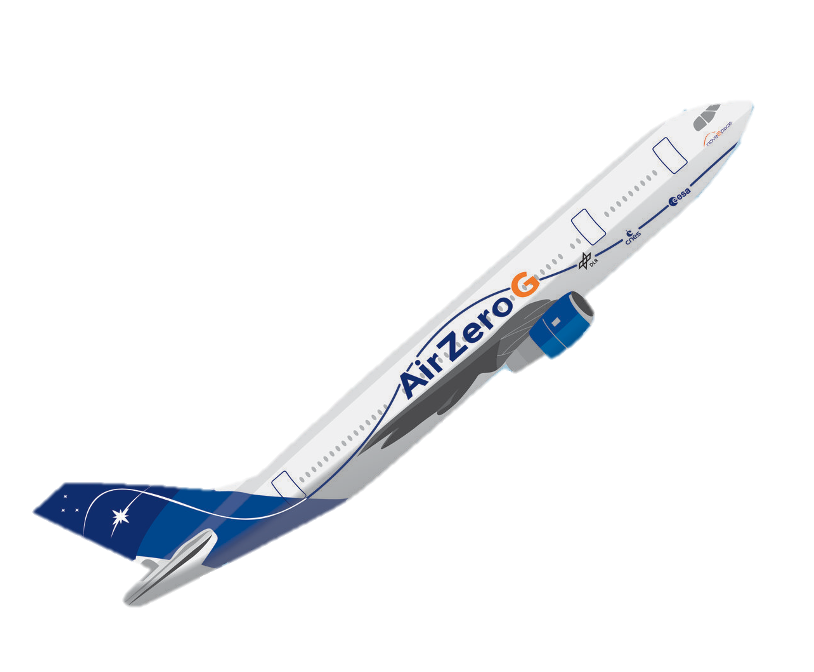

|
I am a Robotics, Systems and Control MSc. student at ETH Zurich. My interests lie broadly in the field of machine intelligence, with a focus on robotics. I am currently interested in leveraging actionless videos for robust and generalizable robot learning. Previously I worked as a Research Assistant at the Robotics Systems Lab, where I trained and deployed highly dynamic low gravity locomotion policies using Deep Reinforcement Learning. I also spent time at the Secure, Reliable, and Intelligent Systems Lab, where I worked on a comprehesive benchmarking tool for foundation models with respect to the EU AI Act. Currently I am a Graduate Research Fellow at INSAIT working on robotics foundation models. Email / CV / LinkedIn / Google Scholar / Twitter |
{kind=link}
|
|
Research |
|

|
SpaceHopper: A Small-Scale Legged Robot for Exploring Low-Gravity
Celestial Bodies
Alexander Spiridonov, Fabio Buehler , Moriz Berclaz , Valerio Schelbert , Jorit Geurts , Elena Krasnova , Emma Steinke , Jonas Toma , Joschua Wuethrich , Recep Polat , Wim Zimmermann , Philip Arm , Nikita Rudin , Hendrik Kolvenbach , Marco Hutter ICRA 2024 paper \ project page \ YouTube \ LinkedIn We present SpaceHopper, a three-legged, small-scale robot designed for future mobile exploration of asteroids and moons. We demonstrate controlled low-gravity jumping locomotion and attitude control using Deep Reinforcement Learning in simulation, and validate the hardware in a gravity offload test stand. |
|

|
Jumping and Attitude Control of a Legged Robot in
Microgravity
Philip Arm* , Valerio Schelbert* , Alexander Spiridonov*, Fabio Buehler , Moriz Berclaz , Jorit Geurts , Fabian Tischhauser , Hendrik Kolvenbach , Marco Hutter In-Preparation for Science Robotics project page \ YouTube \ LinkedIn We evaluated SpaceHopper, a three-legged robot for low gravity mobility, in zero gravity during parabolic flights in collaboration with the European Space Agency. During the experiments, we deployed Deep Reinforcement Learning policies for highly dynamic locomotion control. |
|
|
COMPL-AI Framework: A Technical Interpretation and LLM Benchmarking Suite for the EU Artificial Intelligence Act
Philipp Guldimann* , Alexander Spiridonov*, Robin Staab , Nikola Jovanoviƒá , Mark Vero , Velko Vechev , Anna-Maria Gueorguieva , Mislav Balunoviƒá , Nikola Konstantinov , Pavol Bielik , Petar Tsankov , Martin Vechev Preprint paper \ project page \ github \ HF Leaderboard COMPL-AI is the first technical framework able to evaluate Generative AI models on the EU AI Act üá™üá∫. The project is being actively maintained with over 100 stars on github and has been widely covered in the media (TechCrunch, Reuters, etc.). |
Other Projects |
|

|
Safe Active Exploration
Course Project in Foundations of Reinforcement Learning paper \ poster Developed a novel experimental design framework for Markov Decision Processes, incorporating safe state-action constraints and a reweighted objective to estimate unknowns in unsafe regions, backed by theoretical and experimental convergence analysis. |
|
|
TopoAI: Topological Approaches for Improved Structural Correctness
Course Project in Computational Intelligence Lab paper \ github Developed deep learning methods to enhance road network extraction from satellite imagery, incorporating topological regularizers and re-weighting approaches to improve the topological correctness of road predictions. |
Research featured in |